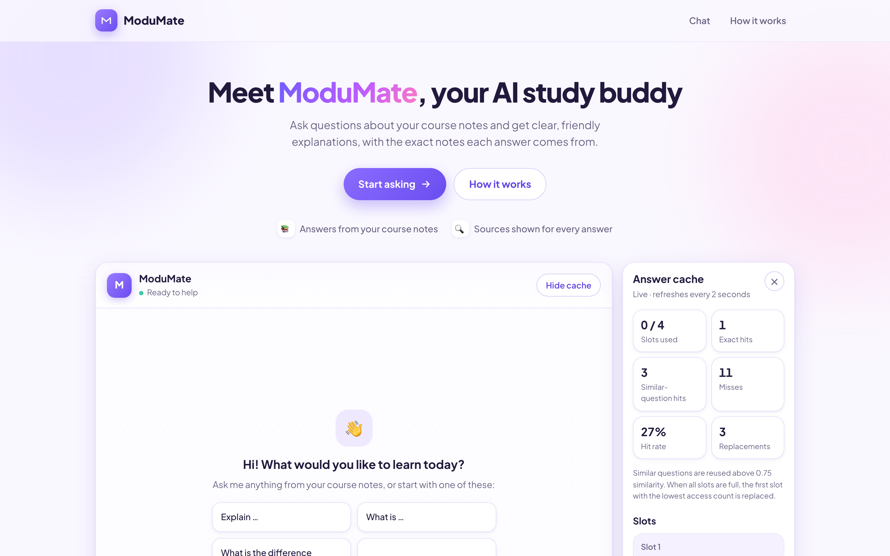
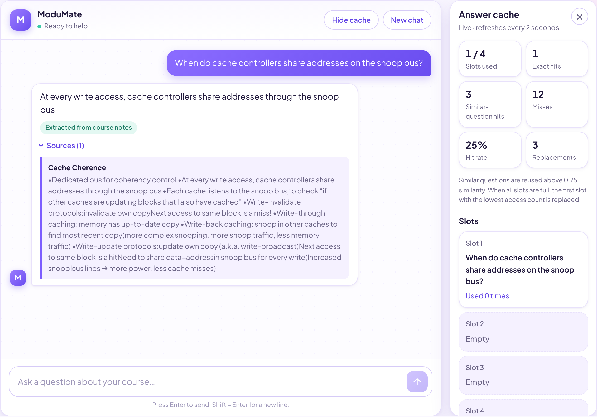
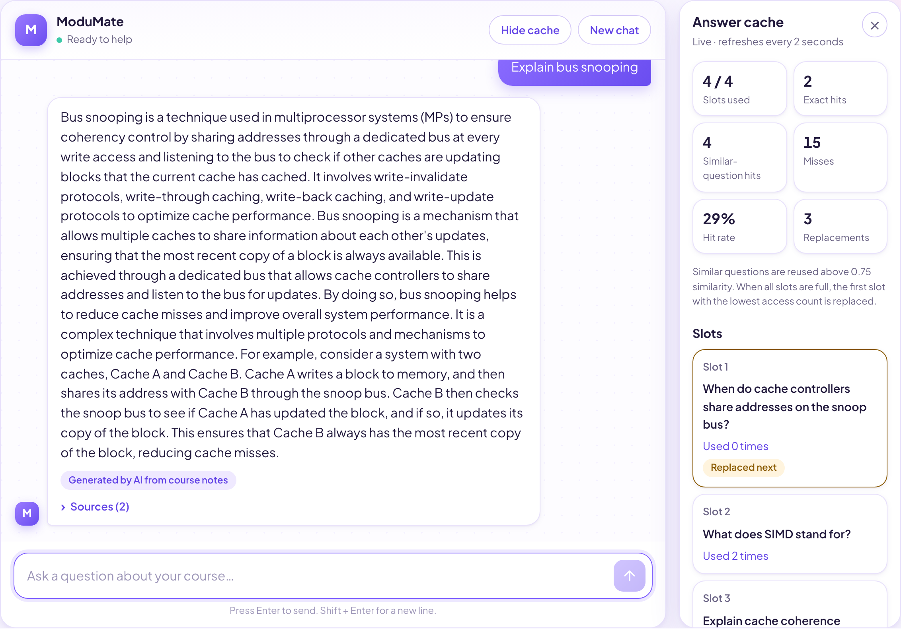
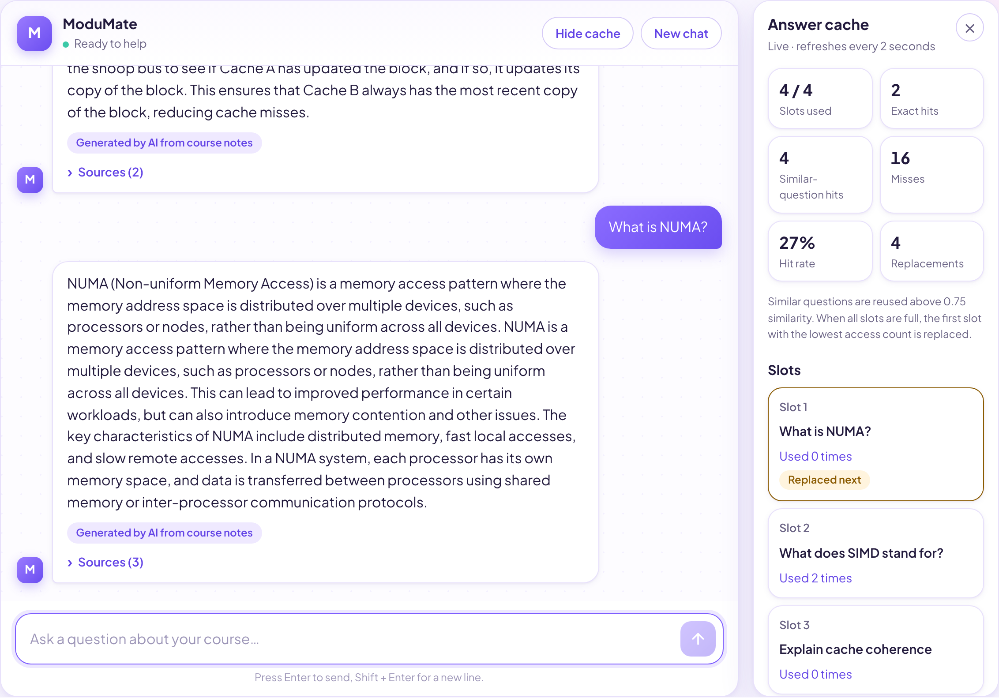

Cost-effective AI tutor
Your course notes,
now a tutor that answers back.
ModuMate is an AI study buddy for a single course module. It answers from the module's own notes, shows the source of every answer, and calls an LLM only when needed.

Live demo
See ModuMate in action
Answers from notes, cache hits for repeated and similar questions, and AI explanations when the notes alone are not enough.
Demo video not found at
assets/video/modumate-demo.mp4- Ask“When do cache controllers share addresses on the snoop bus?”
- Repeat“What does SIMD stand for?” is served from the cache
- Rephrase“What is the full form of SIMD?” matches at 0.90
- Go deeper“Explain bus snooping” uses the AI step
Features
Everything a student needs, nothing they don't

Cache replacement in action


Every answer tells you where it came from
- Extracted from course notes
- Generated by AI from course notes
- Cached answer
- Not answered from course material
Turn any course module into a
personal tutor.
Add the module's notes, run it locally, and give every student answers they can trust.